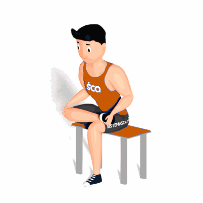

Alongamento da Perna Sentado

Exercício de alongamento para as pernas, que pode ser realizado durante o dia a dia para melhora da circulação do sangue e relaxamento, como também antes das atividades físicas.
Ficha Técnica
Tipo: Alongamento
Grupo Muscular: Perna
Aparelho: Nenhum
Músculos: Nenhum
Como realizar
- Sente-se em um banco ou cadeira;
- Coloque o calcanhar direito sobre o joelho esquerdo e mantenha as costas retas;
- Incline-se para frente com o torso em direção às coxas até sentir o alongamento;
- Fique nesta posição pelo tempo determinado pelo professor(a), depois repita o exercício com a outra perna.
 RC STORE
RC STORE